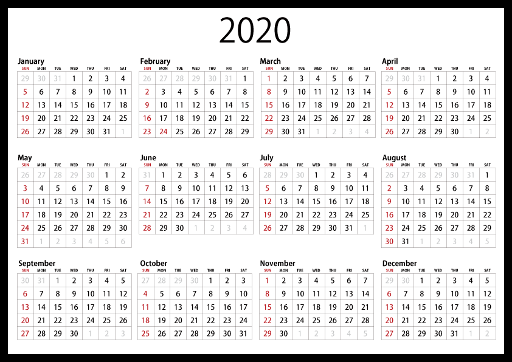

Nuestro día a día
Este es mi ultimo tema que he sacado llamado "YaGGerus - Javelin" del subgenero de Big Room. Tiene algunos sonidos potentes y una buena distribucion de la pista. Es de descarga gratuita y no esta bajo ningun tipo de derechos del autor.
Aqui os dejo el link: https://www.youtube.com/watch?v=ZkSclaVvK6s
Esta fue mi ultima colaboracion que hice con WULTEX, un chico americano a la que llamamos "Carnival" y la verdad es que es una de las que mas me gustan.
Aqui os dejo el link: https://www.youtube.com/watch?v=nIqvk3FMD7Y
Esta fue la primera cancion que saque a YouTube. Se llama "Enforce" y me sirve para ver todo el progreso que he ido haciendo ya que la calidad de sonido no es la misma en Javelin que en esta, aunque a pesar de todo eso, me sigue encantando.
Aqui os dejo el link: https://www.youtube.com/watch?v=655PU5s3oP0